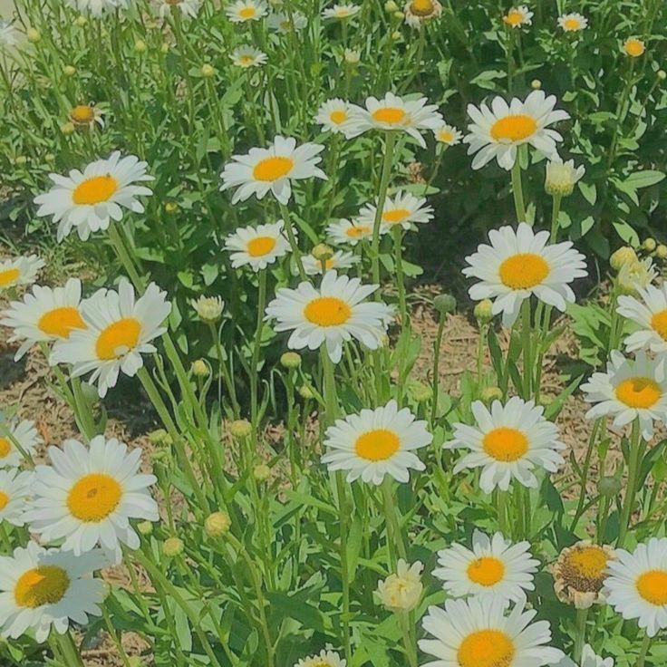
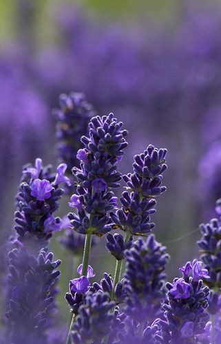
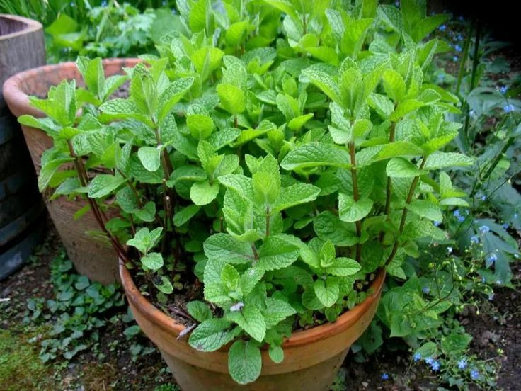

Las flores no solo embellecen nuestro entorno, sino que muchas de ellas poseen propiedades medicinales que se han utilizado en la medicina tradicional durante siglos. A continuación, algunos ejemplos de flores y sus beneficios medicinales:
Infusión de manzanilla para calmar el estómago: La manzanilla es conocida por sus propiedades antiinflamatorias y digestivas. Prepara una infusión con flores de manzanilla seca y agua caliente. Se puede beber para aliviar dolores estomacales, cólicos y malestar digestivo.

Compresa de lavanda para relajación: Las flores de lavanda tienen propiedades calmantes y relajantes. Puedes hacer una compresa colocando flores de lavanda secas en un paño limpio y aplicándola sobre la frente o el cuello para aliviar dolores de cabeza o reducir el estrés.

Cataplasma de caléndula para la piel: La caléndula es conocida por sus propiedades antiinflamatorias y cicatrizantes. Puedes hacer una cataplasma mezclando flores de caléndula trituradas con un poco de aceite de oliva. Aplica esta mezcla sobre quemaduras leves, cortes o irritaciones de la piel para promover la cicatrización
Té de jengibre y menta para la digestión: El jengibre y la menta son excelentes para aliviar problemas digestivos como la indigestión y los gases. Prepara una infusión combinando raíz de jengibre fresco rallado, hojas de menta fresca y agua caliente. Deja reposar durante unos minutos y luego cuela. Se puede beber caliente o frío después de las comidas.
